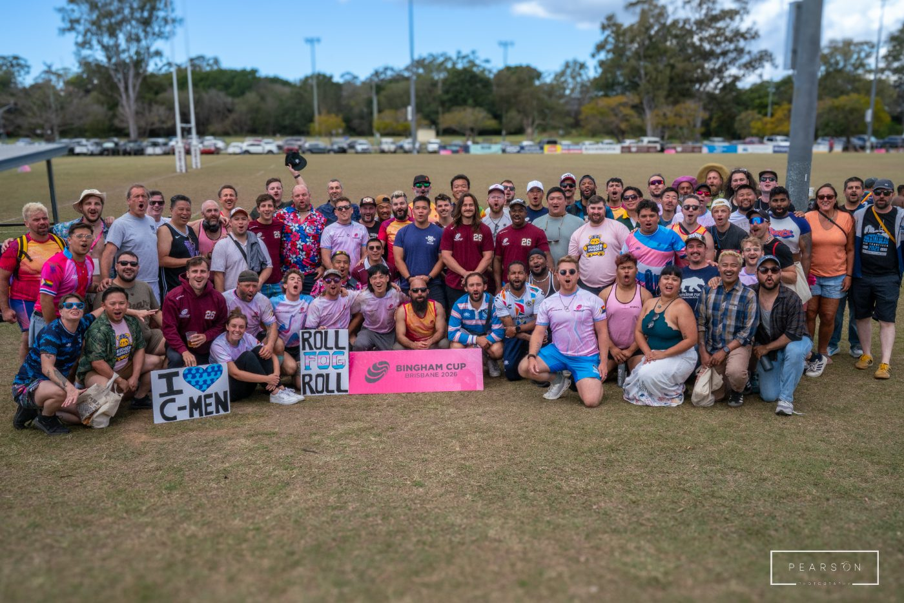

What a season. A NorAm title, a huge Fog contingent in Brisbane for Bingham Cup 2026, and a club that's bigger, louder and more welcoming than it's ever been. You earned this. So for the next few weeks the only instruction from the board is: rest, recover, recruit. Sleep in. See the people you've been neglecting since March. Go somewhere that isn't Crocker.
It's a short break, though. Everything you need to know between now and May is on this page. Read it once, save the dates, then go back to doing nothing.

Before we look forward, a proper thank you to Zackary Forcum, who has handed over the presidency after steering the Fog through a NorAm title, a tour to the other side of the world, and about a thousand small things nobody sees. Zack, the club is in better shape than you found it.
I've heard rumours that Xena has been having lots of rest and recovery, while still being fabulous... "What did you expect?" and Xena responds, "From you? nothing. From me? Nothing less."
Thanks too to the board members stepping down: Xander (recruiting, and all-round glue), Johnny Galang (fundraising, and the scholarships it paid for), Mitch Croll (leadership in more roles than we can list) and Garrett Mack (the marketing and socials that brought half of you here in the first place).
Bring anyone who should hear his story. Partners, rookies, mates.
This September 11 marks 25 years since Mark Bingham, Fog player, passed.
This Thursday, we gather for our annual 9/11 Memorial Toast. We'll raise a glass to Mark, to his incredible mother Alice Hoagland, to our fallen brothers Mark Rumple, Darrin Perry, Tim Fox, and Little Ben Susau, to Coach Kathy Flores, and to every rugger who has worn the blue and silver over our 26-year history.
"We have the chance to be role models for other gay folks who wanted to play sports, but never felt good enough or strong enough."
"I finally felt accepted as a gay man and a rugby player. My two irreconcilable worlds came together... Let's go make some new friends, and win a few games."Mark Bingham
The moment you've all been waiting for!
Come hang starting 3pm to play some beach touch at Ocean Beach.
Kangaroo Court will commence at 5pm. The honorable Ratty Ratcliffe will be our lead judge.
Once our court session ends, we'll enjoy each other's company with a potluck. Bring something to share if you can!
The Saturday night main event of Folsom. The Fog runs the coat check: take coats, hand them back, keep the line moving, and every tip goes to the club. You'll get free entry before after your shift. Event details on Eventbrite.
Shifts range from 8pm - 4am the next day.
Slap sunscreen on strangers, talk rugby, hand out Pathways flyers. Best recruiting shift of the year.
Shifts range from 11-6pm, sign up as they go fast!
Shift times and volunteer sign-up come from Justice. Email fundraising@fogrugby.com to volunteer.
San Diego Armada have finally dropped info on Rucktacular, looks like it's going to be an exciting weekend.
A daily mobility routine from Rob Bascherini you can knock out in under 10 minutes. Do it in the morning, or at minimum before you train. Better joint range of motion means more flexibility, more strength, and fewer of us on the physio table. Start now and it'll be habit by preseason.
Huge thanks to Bryan for coordinating every bag, ball and cone across the Pacific and back. If you still have club kit at home (tackle bags, balls, cones, med kit, jerseys) please get it back to Bryan before Oct 29 so we start preseason with a full store. No questions asked; we'd just rather find it in the shed than buy it twice.
Our free, zero-experience-required intro to the sport, built on a simple idea: there are positions for every body. Sessions run Sep 22 at Crocker and from Oct 6 at Kimball. The single most useful thing you can do for the club this month is bring one person who's never played. Send them to fogrugby.com/p2r or just bring them along: water, cleats if they have them, and you.
fogrugby.com is updated for 2026–27: refreshed copy, the NorAm 2025 highlights, the new board and squad pages, and the Pathways details. Take a look and tell us what you think. To relive Brisbane, the team photo folder is open, or search #fogatbingham.
Enjoy the break. You've earned it, and there's a lot to look forward to.
See you on the pitch,